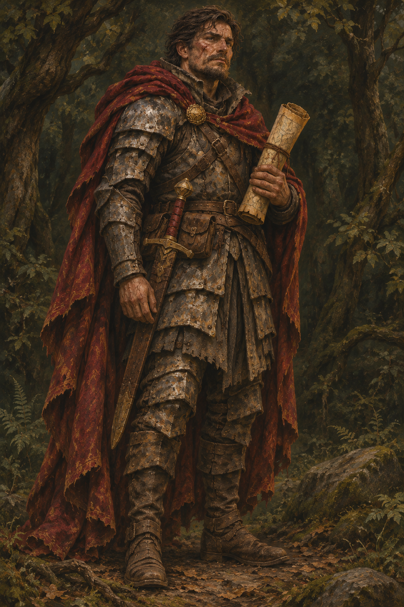
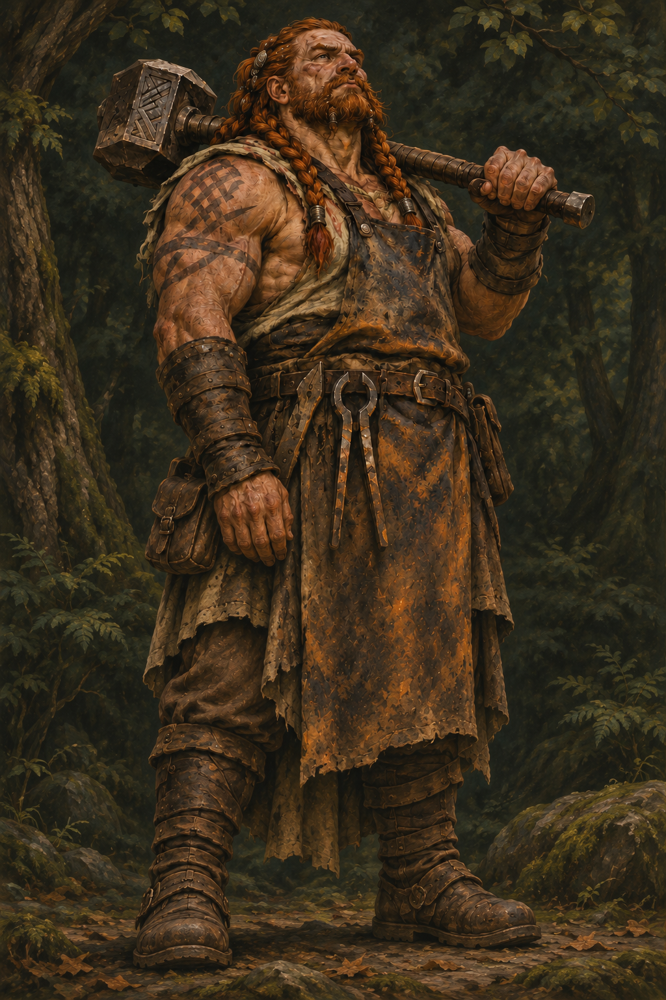
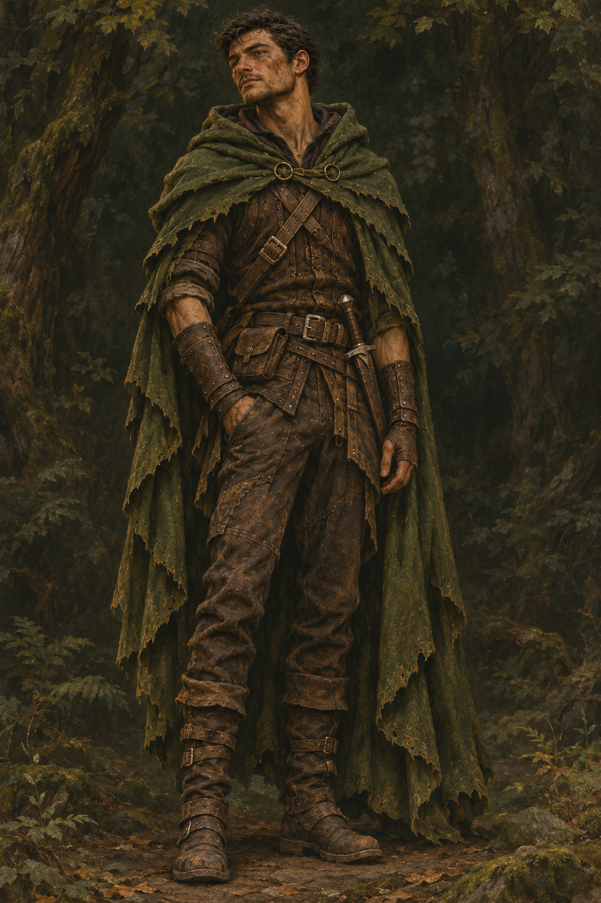
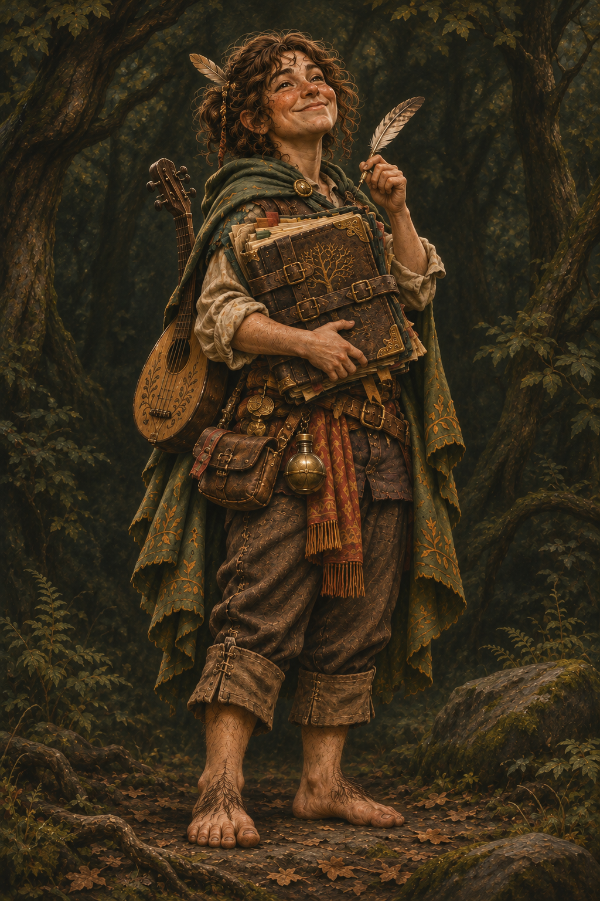
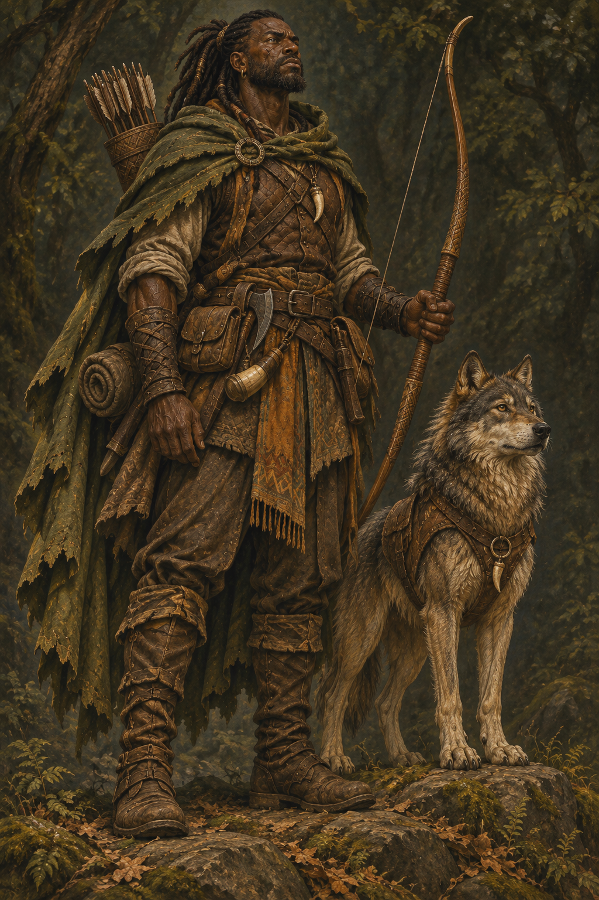

Uma crônica das Terras Roubadas
Há histórias que
começam na fuga.
Três desertores. Uma terra sem senhores. E um futuro que ainda precisa ser conquistado.
PATH TO GLORYLivro I · Os Rejeitados do Rio
O primeiro livro
Os Rejeitados
do Rio
Nas Terras Roubadas, a liberdade tem seu preço — e cada estrada leva a uma nova escolha.
Entre soldados sem bandeira, alianças improváveis e perigos à espreita, uma campanha de Pathfinder ganha vida como romance de fantasia.
Entre nesta históriaLivro I
Entre as páginas
Uma história para ler no seu próprio ritmo.
A companhia
Os rostos da história
Nem todos escolheram ser heróis.

Thomas Teranis
Soldado, cartógrafo e oráculo de batalha. Lidera seus companheiros enquanto aprende a escolher o próprio caminho.

Thundarak
Bárbaro e ferreiro da Numéria, sonha com uma vida longa e pacífica longe das ordens de um exército.

Ralphye
Ladino criado entre elfos, perspicaz e pragmático, foi o primeiro a perceber que era hora de partir.

Linzi
Barda halfling e cronista, carrega uma carta de exploração e um livro quase tão grande quanto as histórias que deseja contar.

Ekundayo
Patrulheiro e caçador de gigantes, viaja com o lobo Cão e fala menos do que suas flechas.
Ilustrações interpretativas: detalhes visuais podem ser refinados com as referências dos jogadores.
A crônica continua
O rio ainda
tem caminhos.
Esta história nasceu das sessões de uma campanha de Pathfinder Segunda Edição. Os acontecimentos registrados pela mesa são o ponto de partida; diálogos e detalhes literários dão vida ao que acontece entre eles.
O epílogo encerra o primeiro livro, mas não a jornada. Novas sessões podem abrir novos capítulos.
Voltar ao livro